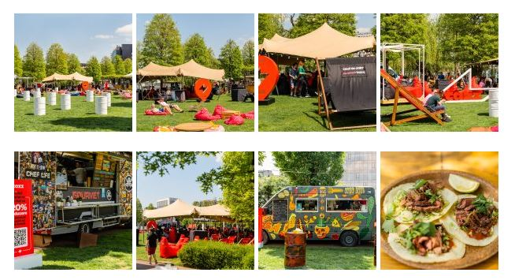
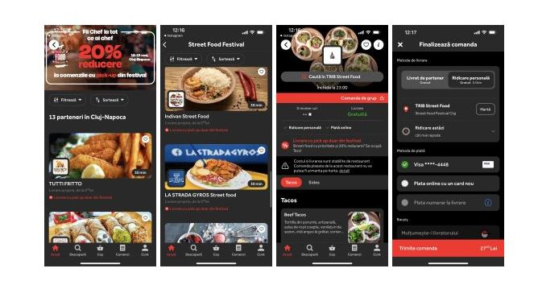

Dacă ai chef de ceva bun, sau ai doar chef de relaxare, de toate se ocupă Tazz pentru tine la Street Food Festival Cluj. Poate nu știai deja, dar sezonul Street Food Festival s-a deschis joi la Cluj, în parcul de la Iulius Mall și până duminică, în 15 mai, ai ocazia să îți satisfaci toate poftele culinare fără să stai la coadă. Practic nu ai altceva de făcut decât să îți instalezi aplicația Tazz pe telefon și să te bucuri de festival împreună cu prietenii.
Dacă totuși ești nehotărât în privința celei mai bune alegeri din meniu, îți recomandăm să faci o vizită de recunoaștere prin festival, să îți răsfeți simțurile și să îți găsești apoi cel mai confortabil loc pentru ceea ce urmează. Ai de ales între multe zone de relaxare de unde poți să comanzi direct din aplicația Tazz mâncare de la food truck-ul tău preferat, iar între timp te poți bucura de un concert, de un show culinar sau de câteva ore bune de stat la umbră în timp ce mâncarea ta se prepară. O notificare din aplicație te va anunța când poți să îți ridici comanda. Și ce poți să-ți dorești mai mult decât să eviți statul la coadă. Plătești online și, în plus ai și 20% reducere la comenzile cu pick-up din festival și o tombolă la Tazz corner.
În prima zi de Street Food Festival am testat și noi experiența comenzii prin Tazz și ne-am putut bucura cu adevărat de câteva ore bune de relaxare, ceea ce vă recomandăm și vouă în acest weekend.
În Iulius Park vei descoperi 3 zone dedicate Street Food Festival, unde noi am numărat aproximativ 30 de vendori. Aici poți porni într-o adevărată călătorie culinară în jurul lumii, iar anul acesta fiecare food truck introduce „Porții de degustare”. Frâu liber poftelor!
La început a fost… nimeni și nimic care să ne vorbească despre viața orașului, despre ce se întâmplă în materie de evenimente și localuri pe plan local, niciun motiv care să ne scoată din casă.
Everyday we’re clujlife(ing). Ieșim din casă, vedem ce se întâmplă, ce mai e nou, ce mai zice lumea, ce-ar mai fi interesant de făcut, și apoi îți povestim și ție. Facem asta din Ianuarie 2008. Prezența aceasta îndelungată ne-a adus destule cunoștințe și curaj încât să abordăm subiecte pe care nu le ”atinge” nimeni. Avem informații pe care nu le găsești în altă parte și acces la mulți oameni din varii domenii.